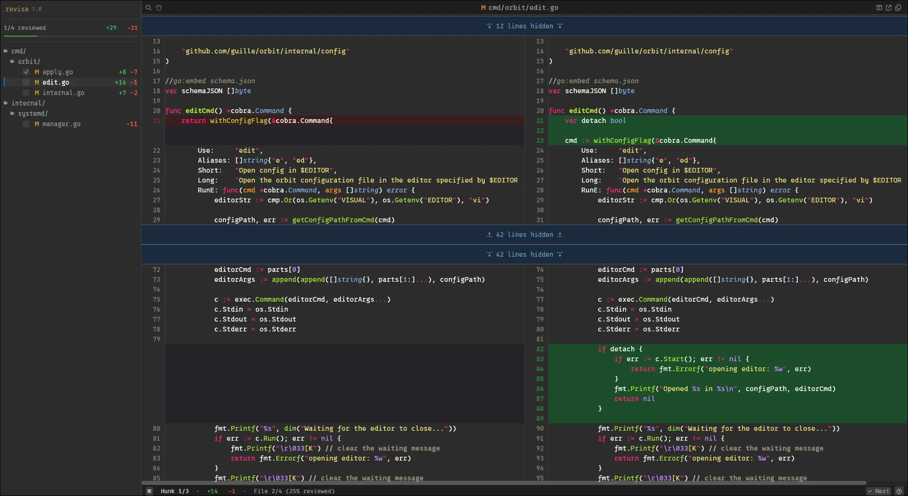
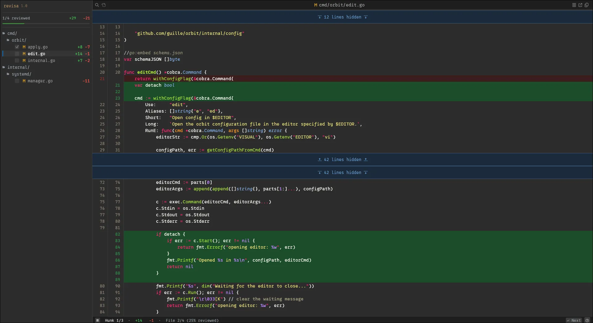
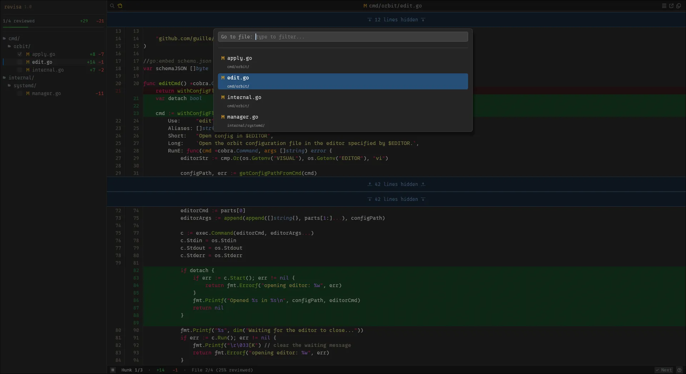
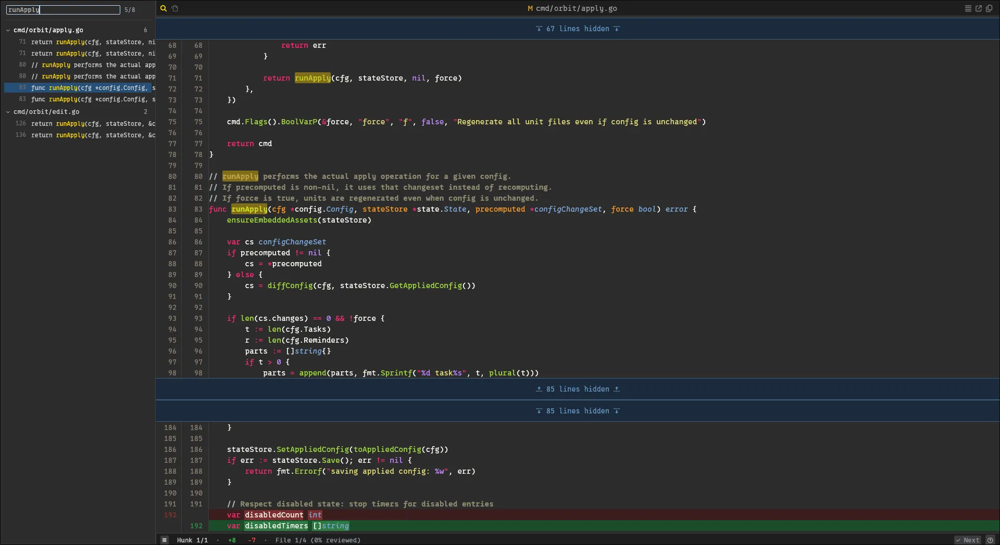

Scroll-synced side-by-side view with word-level inline diff highlighting.

Unified (stacked) view with dual gutter showing old and new line numbers.

Ctrl+P fuzzy search to jump to any file instantly.

Search across all files with results grouped in the sidebar.
Built-in support for 50+ languages via syntect. Bring your own .tmTheme or .sublime-syntax files.
Jump between changes with keyboard shortcuts. Folded unchanged regions keep focus on what matters.
Every action has a keybind. All keybinds are configurable. Press F1 to see them all.
Heuristic content-similarity scoring detects renamed and moved files automatically.
Use as a git difftool. The included git-revisa wrapper also supports reviewing GitHub PRs via the gh CLI.
Colors, fonts, keybinds, fold behavior, and more — all tweakable via a TOML config file.
mise use --global github:guille/revisatar xzf revisa_v*_linux_amd64.tar.gz
sudo install -m 755 revisa_*/revisa revisa_*/git-revisa /usr/local/bin/cargo install --git https://github.com/guille/revisa.git